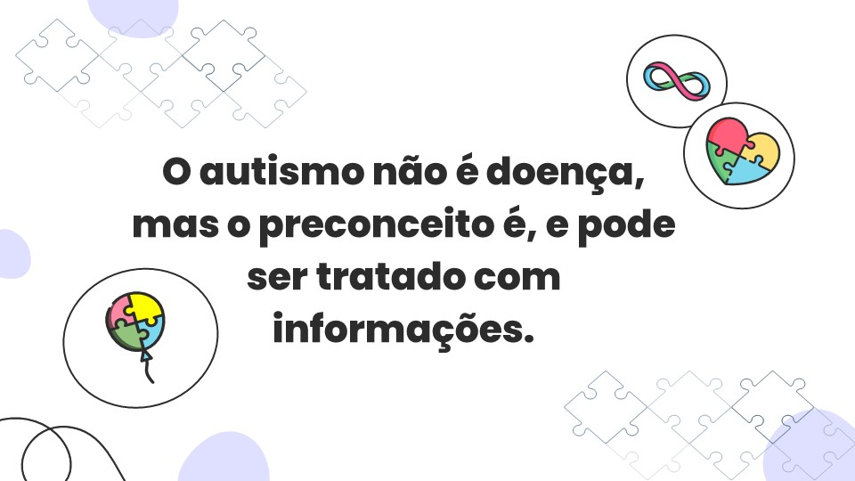

O que é o Autismo
O autismo, ou Transtorno do Espectro Autista (TEA), é um transtorno do neurodesenvolvimento caracterizado por dificuldades na comunicação e interação social, além de padrões de comportamento repetitivos e restritos. As manifestações do autismo podem variar amplamente em termos de tipo e gravidade, o que significa que cada indivíduo no espectro autista pode apresentar um conjunto único de desafios e habilidades. .

Sinais do autismo
Sinais do autismo Os primeiros sinais de autismo geralmente aparecem na infância, frequentemente antes dos 2 anos de idade, e podem incluir dificuldades em estabelecer contato visual, iniciar ou manter uma conversa, e uma forte adesão a rotinas. Pessoas com TEA também podem mostrar sensibilidades sensoriais aumentadas, como reações intensas a certos sons, texturas ou cheiros. .
Causas do Autismo
As causas do autismo são complexas e não totalmente compreendidas, mas a pesquisa sugere que uma combinação de fatores genéticos e ambientais desempenha um papel significativo.
Conheça os seus direitos!

Curadoria divertida
Acesse materiais selecionados e organizados disponíveis na internet para ensinar as crianças sobre autismo e a valorizar e respeitar as diferenças